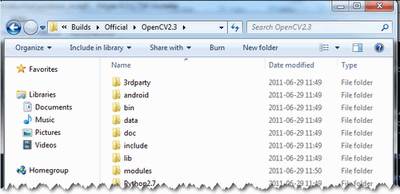
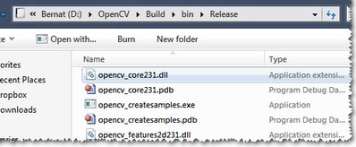

上一个教程: Using OpenCV with Eclipse (plugin CDT)
下一个教程: How to build applications with OpenCV inside the "Microsoft Visual Studio"
| |
| 原作者 | Bernát Gábor |
| 兼容性 | OpenCV >= 3.0 |
- 警告
- 本教程可能包含过时的信息.
这里的描述是在Windows7SP1上测试的.不过,它也应该适用于任何其他相对现代的Windows操作系统版本.如果您在执行以下步骤后遇到错误,请随时通过我们的联系方式与我们联系OpenCV问答;论坛. 我们会尽力帮助你的.
- Note
- 要使用OpenCV库,有两个选项:Installation by Using the Pre-built Libraries 或Installation by Making Your Own Libraries from the Source Files . 虽然第一个更容易完成,但它只适用于使用最新的Microsoft Visual Studio IDE进行编码,并且不利用我们集成到库中的最先进技术_Windows_Install_Prebuild:
使用预建库安装
- 启动所选的web浏览器并转到源代码页.
- 选择要使用的版本并下载.
- 确保你有管理员权限.打开自解压存档.
您可以在所选路径检查安装,如下所示.

- 要完成安装,请转到Set the OpenCV environment variable and add it to the systems path 部分.
使用git bash安装(版本>=2.14.1)和cmake(版本>=3.9.1)
- 你必须下载cmake (version >=3.9.1)然后安装.安装期间必须将cmake添加到路径变量
- 您必须安装git-bash (version>=2.14.1). 安装期间不要将git添加到PATH变量
- 运行git bash.观察命令行窗口.假设您想在c:/lib中构建opencv和 opencv_contrib
- 在 git 命令行中输入以下命令(如果文件夹不存在):
- 在c:/lib中保存名为installOCV.sh的脚本
#!/bin/bash -e
myRepo=$(pwd)
CMAKE_GENERATOR_OPTIONS=-G"Visual Studio 16 2019"
#CMAKE_GENERATOR_OPTIONS=-G"Visual Studio 15 2017 Win64"
#CMAKE_GENERATOR_OPTIONS=(-G"Visual Studio 16 2019" -A x64) # CMake 3.14+ is required
if [ ! -d "$myRepo/opencv" ]; then
echo "cloning opencv"
git clone https://github.com/opencv/opencv.git
else
cd opencv
git pull --rebase
cd ..
fi
if [ ! -d "$myRepo/opencv_contrib" ]; then
echo "cloning opencv_contrib"
git clone https://github.com/opencv/opencv_contrib.git
else
cd opencv_contrib
git pull --rebase
cd ..
fi
RepoSource=opencv
mkdir -p build_opencv
pushd build_opencv
CMAKE_OPTIONS=(-DBUILD_PERF_TESTS:BOOL=OFF -DBUILD_TESTS:BOOL=OFF -DBUILD_DOCS:BOOL=OFF -DWITH_CUDA:BOOL=OFF -DBUILD_EXAMPLES:BOOL=OFF -DINSTALL_CREATE_DISTRIB=ON)
set -x
cmake "${CMAKE_GENERATOR_OPTIONS[@]}" "${CMAKE_OPTIONS[@]}" -DOPENCV_EXTRA_MODULES_PATH="$myRepo"/opencv_contrib/modules -DCMAKE_INSTALL_PREFIX="$myRepo/install/$RepoSource" "$myRepo/$RepoSource"
echo "************************* $Source_DIR -->debug"
cmake --build . --config debug
echo "************************* $Source_DIR -->release"
cmake --build . --config release
cmake --build . --target install --config release
cmake --build . --target install --config debug
popd
CMAKE_GENERATOR_OPTIONS=-G"Visual Studio 14 2015 Win64"
-DCMAKE_INSTALL_PREFIX="$myRepo/install/$RepoSource"
CMAKE_OPTIONS=(-DBUILD_PERF_TESTS:BOOL=OFF -DBUILD_TESTS:BOOL=OFF -DBUILD_DOCS:BOOL=OFF -DBUILD_EXAMPLES:BOOL=OFF)
- 在git命令行中输入以下命令:
- 喝一两杯咖啡...opencv准备就绪:仅此而已！
- 下次运行此脚本时,将更新并重新生成opencv和opencv_contrib
通过从源文件创建自己的库进行安装
您可以在以下视频中找到本教程的内容:Part 1和Part 2,在YouTube上主持.(有梯子的同学可以搬下)
warning
以上这些视频早已过时,包含不准确的信息.请小心,因为这些视频中描述的解决方案不再受支持,甚至可能破坏您的安装.
如果您正在构建自己的库,您可以从我们的Git repository.
从头开始构建OpenCV库需要预先安装几个工具:
- 一个IDE的选择(最好),或只是一个CC++编译器,将真正使二进制文件.在这里我们将使用Microsoft Visual Studio. 但是,您可以使用任何其他具有有效CC++编译器的IDE.
- CMake,这是一个从OpenCV源文件生成项目文件(用于所选IDE)的简洁工具.它还允许轻松配置OpenCV构建文件,以便生成完全符合您需要的二进制文件.
- Git获取OpenCV源文件.一个很好的工具就是TortoiseGit. 或者,您可以从我们的网站下载源文件的存档版本源代码页
OpenCV可能有多种风格.有一个“核心”部分将自己工作.尽管如此,仍然有一些由第三方制作的工具库,它们提供OpenCV可以利用的服务.这些将在许多方面提高其能力.为了使用它们中的任何一个,您需要下载它们并将其安装到您的系统上.
- 这个Python库是构建Python接口OpenCV.现在使用这个版本
2.7.{x}. 如果您想构建OpenCV文档.
- Numpy是Python的科学计算包.所需的Python接口.
- 英特尔线程构建块(TBB)在OpenCV内部用于并行代码段.使用它可以确保OpenCV库能够充分利用系统CPU中的所有核心.
- 英特尔集成性能原件(IPP)可以用来提高OpenCV库的颜色转换、Haar训练和DFT函数的性能.小心,因为这不是免费服务.
- OpenCV通过使用Qt框架. 要快速了解它所提供的内容,请查看文档highgui模块,在Qt新功能部分.需要4.6或更高版本的框架.
- Eigen是一个线性代数的C++模板库.
- 最新的CUDA工具包允许你使用GPU内部的电源.这将大大提高某些算法(例如HOG描述符)的性能.让越来越多的算法在gpu上工作是OpenCV团队不断努力的结果.
- OpenEXR库需要源文件才能使用这种高动态范围(HDR)图像文件格式.
- OpenNI框架包含一组开源api,通过诸如语音命令识别、手势和身体运动跟踪等方法为与设备的自然交互提供支持.可以找到预构建的二进制文件在这里. 的源代码OpenNI和OpenNI2也可以在Github上使用.
- 编程辅助工具是一个文档生成器,是实际创建OpenCV文档.
现在,我们将描述完整构建(使用上述所有框架、工具和库)要遵循的步骤.如果您不需要这些支持,您可以自由地跳过本节.
Building the library
- 确保您有一个使用有效编译器的IDE.如果是microsoftvisualstudio,只需安装它并确保它启动.
- 安装CMake. 只需按照向导操作,无需将其添加到路径中.默认安装选项正常.
- 从its下载并安装msysgit的最新版本官方网站. 还有可移植版本,您只需解包即可访问Git的控制台版本.假设对我们中的一些人来说这已经足够了.
- 安装TortoiseGit. 根据您使用的操作系统类型选择32位或64位版本.安装时,找到msysgit(如果它没有自动完成).跟随向导–默认选项在大多数情况下是可以的.
- 在文件系统中选择一个目录,从中下载OpenCV库.例如,我建议创建一个具有短路径和没有特殊字符的新路径
D:/OpenCV. 对于本教程,我建议您这样做.如果你走自己的路,知道自己在做什么–没关系.
- 将存储库克隆到所选目录.点击后Clone按钮,将出现一个窗口,您可以从中选择要下载源文件的存储库(https://github.com/opencv/opencv.git)去哪个目录(
D:/OpenCV).
- 按下OK按钮并耐心等待,因为存储库的下载量相当大.这将需要一些时间取决于你的互联网连接.
- 在本节中,我将介绍如何安装第三方库.
- 下载Python库并使用默认选项进行安装.您将需要一些其他python扩展.幸运的是,通过一个叫做安装工具. 下载并重新安装.
- 安装Numpy最简单的方法就是从来源. 确保下载并安装的二进制文件与python版本完全一致(对于python版本也是如此)
2.7).
对于英特尔线程构建块(TBB)下载源文件并将其解压缩到系统的目录中.例如,让我们有D:/OpenCV/dep. 用于安装英特尔集成性能原件(IPP)故事是一样的.对于提取档案,我建议使用7-Zip应用程序.
- 以防Eigenlibrary又是一个下载和解压的案例
D:/OpenCV/dep目录.
- 同上OpenEXR.
- 对于OpenNI框架您需要同时安装开发-建造以及传感器模块.
- 对于CUDA,您还需要两个模块:最新的CUDA工具包以及CUDA Tools SDK. 使用完成选项,根据您的操作系统使用32位或64位设置.
对于Qt框架,您需要自己构建二进制文件(除非您使用32位编译器的microsoftvisualstudio2008).要做到这一点,请转到Qt下载第页.下载源文件(不是安装程序！！！):
将其解压到一个简短的目录中,如D:/OpenCV/dep/qt/. 然后你需要建造它.启动一个Visual Studio 命令 提示(2010)使用“开始”菜单搜索(或在“开始”菜单中导航所有程序&ndash>Microsoft Visual Studio 2010&ndash>Visual Studio工具&ndash>Visual Studio命令提示符(2010)).
现在导航到提取的文件夹并使用这个控制台窗口在其中输入.你应该有一个包含如下文件的文件夹安装,Make等等.使用目录命令列出当前目录中的文件.到达此目录后,输入以下命令:
configure.exe -release -no-webkit -no-phonon -no-phonon-backend -no-script -no-scripttools
-no-qt3support -no-multimedia -no-ltcg
完成这项工作大约需要10-20分钟.然后输入下一个需要更长时间的命令(很容易就需要一个多小时):
在此之后,在Windows 7上使用以下命令设置Qt环境变量:
setx -m QTDIR D:/OpenCV/dep/qt/qt-everywhere-opensource-src-4.7.3
另外,使用路径编辑器. 在我们的情况下,这是D:/OpenCV/dep/qt/qt-everywhere-opensource-src-4.7.3/bin.
- Note
- 如果您计划进行Qt应用程序开发,也可以在此时安装Qt Visual Studio加载项. 在此之后,您可以在不使用Qt Creator. 一切都很好地集成到visualstudio中.
现在开始CMake(CMake gui). 您可以再次在“开始”菜单搜索中输入它或从“所有程序”中获取它&ndash>CMake 2.8&ndash>CMake(CMake gui).首先,为OpenCV库的源文件选择目录(1).然后,指定一个为OpenCV(2)构建二进制文件的目录.
按Configure按钮指定编译器(和IDE)你想用的.请注意,在这种情况下,您可以选择不同的编译器来生成64位或32位库.选择在应用程序开发中使用的一个.
CMake将启动并基于您的系统变量尝试自动定位尽可能多的包.您可以使用–在中修改要用于生成的包>带有X个菜单点(其中X是软件包的缩写).以下是您可以打开或关闭的当前软件包列表:
选择要使用的所有软件包,然后再次按配置按钮.为了更容易地概述构建选项,请确保分组二进制目录选择下的选项处于启用状态.对于某些包,CMake可能找不到所有必需的文件或目录.在这种情况下,CMake将在其输出窗口(位于GUI底部)中抛出一个错误,并将其字段值设置为notfound常量.例如:
为此,您需要手动设置查询的目录或文件路径.在这次新闻发布会之后配置按钮查看您输入的值是否被接受.这样做,直到所有条目都正常,并且您在GUI的字段/值或输出部分看不到错误为止.现在我想强调一个您肯定会喜欢的选项:启用&ndash>启用\解决方案\文件夹.OpenCV将创建许多项目,启用此选项将确保它们在解决方案管理器. 如果你问我的话,这是一个必备功能.
此外,还需要选择要构建OpenCV的哪一部分.
- 生成文档->它创建了两个用于构建OpenCV文档的项目(将有一个单独的项目用于构建HTML和PDF文件).请注意,这些不是与解决方案一起构建的.为此,需要对这些对象执行显式的build project命令.
- 构建示例->OpenCV附带了许多示例应用程序,您可以从中了解大多数库功能.如果OpenCV在您的计算机上完全可用,那么这也很容易尝试.
- BUILD_PACKAGE->在版本2.3之前,您可以构建一个将构建OpenCV安装程序的项目.有了它,您可以轻松地在其他系统上安装OpenCV风格.对于OpenCV的最新源文件,它生成了一个新项目,该项目只需使用OpenCV源文件创建一个zip存档.
- 生成共享库-> 通过此选项,您可以控制生成DLL文件(启用时)或静态库文件(*.lib).
- 内部版本测试-> OpenCV的每个模块都分配了一个测试项目.构建这些测试项目也是一种很好的尝试方式,模块在您的系统上也能像预期的那样工作.
- 构建性能测试-> 还有许多OpenCV函数的性能测试.如果您关心性能,请构建它们并运行.
- BUILD_opencv_python->不言自明.从Python语言创建二进制文件以使用OpenCV.
- BUILD_opencv_world->生成一个“opencv_world”二进制文件(一个共享或静态库,取决于BUILD_SHARED_LIBS)包括所有模块,而不是单独的二进制文件集合,每个模块一个二进制文件.
再按一下按钮配置按钮并确保没有报告错误.如果是这种情况,您可以告诉CMake通过按Generate按钮.转到build目录并打开创建的OpenCV解决方案.根据您选择的上述选项的多少,解决方案可能包含相当多的项目,因此在启动时对IDE要宽容.现在您需要同时构建释放以及调试二进制文件.在为其中一个生成后,使用IDE上的下拉菜单更改为另一个.
最后,您可以观察bin目录中构建的二进制文件:

对于文档,您需要在doxygenHTML文档的项目.它会召唤Doxygen做所有艰苦的工作.您可以在build/doc/doxygen/html.
要将头文件和二进制文件(您将在自己的项目中使用)收集到一个单独的目录中(类似于预构建的二进制文件的传送方式),您需要显式地构建安装项目.
这将创建一个安装目录中的建造一个将所有构建的二进制文件收集到一个地方的程序.只有在你建立了两个释放和调试版本.
要测试您的构建,只需进入Build/bin/Debug或Build/bin/Release目录并启动两个应用程序,如contours.exe. 如果他们跑了,你就完了.否则,肯定出了大问题.在这种情况下,你应该联系我们的电话问答;论坛. 如果一切正常contours.exe输出应类似于下图(如果使用Qt支持构建):
- Note
- 如果您使用GPU模块(CUDA库),请确保您也升级到GPU的最新驱动程序.在nvcuda.dll中包含无效项(或找不到)的错误消息主要是由旧的视频卡驱动程序引起的.要测试GPU(如果已构建),请运行performance_gpu.exe示例应用程序.
设置OpenCV环境变量并将其添加到系统路径
首先,我们设置一个环境变量来简化我们的工作.这将保存我们在项目中使用的OpenCV库的构建目录.启动命令窗口并输入:
setx -m OPENCV_DIR D:\OpenCV\Build\x86\vc11 (suggested for Visual Studio 2012 - 32 bit Windows)
setx -m OPENCV_DIR D:\OpenCV\Build\x64\vc11 (suggested for Visual Studio 2012 - 64 bit Windows)
setx -m OPENCV_DIR D:\OpenCV\Build\x86\vc12 (suggested for Visual Studio 2013 - 32 bit Windows)
setx -m OPENCV_DIR D:\OpenCV\Build\x64\vc12 (suggested for Visual Studio 2013 - 64 bit Windows)
setx -m OPENCV_DIR D:\OpenCV\Build\x64\vc14 (suggested for Visual Studio 2015 - 64 bit Windows)
这里的目录是您拥有OpenCV二进制文件的地方(提取或构建). 您可以使用不同的平台(例如x64而不是x86)或编译器类型,因此请替换适当的值.在这个文件夹中,应该有两个名为库和箱子. 如果您希望使设置计算机化,而不是用户化,那么应该添加-m.
如果您构建了静态库,那么就完成了.否则,您需要添加箱子文件夹路径到系统路径.这是因为您将以*“动态链接库”*(也称为动态链接库). 其中存储了OpenCV库包含的所有算法和信息.操作系统将只在运行时按需加载它们.然而,要做到这一点,操作系统需要知道它们在哪里.系统路径包含可在其中找到DLL的文件夹列表.将OpenCV库路径添加到这个文件中,操作系统就会知道如果他需要OpenCV二进制文件,应该去哪里查找.否则,您将需要在应用程序可执行文件旁边复制使用过的dll(exe)对于操作系统来说,这是非常不愉快的,如果你在许多项目上工作.要做到这一点,请重新启动PathEditor并添加以下新条目(在应用程序中单击鼠标右键以打开菜单):
把它保存到注册表,你就完成了.如果您更改了构建目录的位置,或者希望使用不同的构建来试用您的应用程序,那么您所需要做的就是通过setx命令窗口中的命令.
现在您可以使用继续阅读教程How to build applications with OpenCV inside the "Microsoft Visual Studio"部分.在那里,您将了解如何在MicrosoftVisualStudioIDE的帮助下在您自己的项目中使用OpenCV库.


 1.8.13
1.8.13